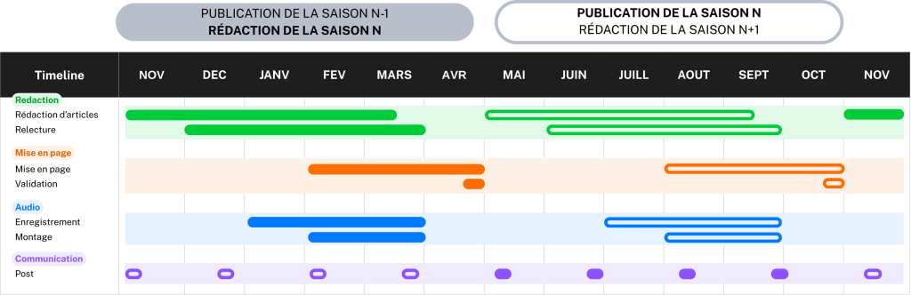

Popular Science Webzine: Sérotine
Sérotine is a popular science web magazine that covers a variety of topics that are rarely discussed. It encourages a critical mindset in a lighthearted or offbeat tone. Its goal is to make science fun while maintaining high standards of scientific rigor.

Project context & objectives
The goal of this webzine is to develop a new approach to science communication within the AurorAlpes association. It was designed so that association members can freely write articles, science fiction stories, or even poems on topics that ispire them.
The decision to adopt a web magazine format was made to emulate the style of print popular science magazines while overcoming their physical limitations. Thanks to the digital format, it is very easy to add links, audio files, or even videos.
Role & responsibilities
- Seting up an editorial committee to ensure the project runs smoothly
- Developing a charter for the use of artificial intelligence
- Discussing the adoption of an inclusive writing style
- Drafting of a roadbook or methodological guide for contributors
- Setting up a comments section via Utterances
- Coordinating the editorial committee and project contributors
- Applying editorial guidelines and artistic direction
- Managing the email inbox and moderating the comments section
- Writing and proofreading articles
- Recording and processing audio versions of content
- Adapting and repurposing magazine content for social media
Déroulement / Mise en œuvre
The magazine operates on a 6-month cycle called « seasons », during which 3 to 6 issues are produced.

- Writing and proofreading as many popular science articles as possible
- Suggesting article layouts
- Recording and editing audio versions
- Organizing several magazines based on the number of articles ready out
- Planning the regular publication of the magazines over the next 6 months
- Regular publication of the magazines
- Simultaneous launch of Step 1